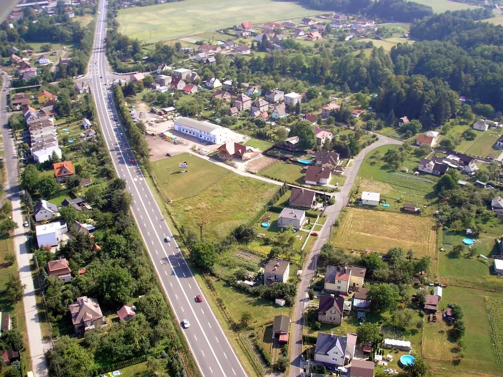

Kunčičky u Bašky · od roku 1994
Voda, topení, plyn a elektro pro domy, bytovky i firmy
Montujeme a opravujeme rozvody vody, plynu a topení, kotle a kotelny. Děláme revize plynových a elektrických zařízení. Pro rodinné domy, bytové domy, obce i firmy z okolí Frýdku-Místku.
Kancelář Po–Pá 7:00–15:00+420 558 440 040Služby
Voda a kanalizace
Rozvody vody a odpadů, stoupačky v bytových domech, novostavby i rekonstrukce.
Topení a kotle
Montáž a servis plynových kotlů a elektrokotlů, radiátory a termostatické ventily, kotelny nad 50 kW.
Plyn a revize
Plynovody od HUP po spotřebiče, výměna stoupaček, revize plynových zařízení a tlakových nádob.
Elektro
Elektroinstalace a revize elektrických zařízení, i jako součást větší zakázky.
Tepelná čerpadla a solár
Montáž tepelných čerpadel včetně projektové dokumentace a solárních systémů.
Kamera do potrubí
Kontrola vodovodů, kanalizace a komínů kamerou, od průměru 20 mm.
Materiály, na které jsou naši lidé proškoleni: COMAP, REHAU, VIEGA, REVEL, FRIATEC, GABOTHERM, SUPERSAN, TCI, KORADO, BAXI, HANSA, NOVASERVIS, RAVAK, PTÁČEK, IMI
Zákazníci
Pro koho pracujeme
Rodinné domy
Nový kotel, rozvody při rekonstrukci, revize plynu, tepelné čerpadlo.
Například: voda, topení a odpady v rodinném domě v Morávce.
Bytové domy a SVJ
Výměna stoupaček vody a plynu, radiátorů a ležatých rozvodů.
Například: plynovod od HUP po spotřebiče pro SVJ Lískovecká 2867.
Obce, školy a firmy
Kotelny nad 50 kW, rekonstrukce ústředního topení, předávací stanice.
Například: rekonstrukce ÚT v blocích A–E Nemocnice ve Frýdku-Místku.
K tomu navíc
Z vlastní haly v Kunčičkách
Kromě řemesel nabízíme polystyren, techniku a dopravu.
Polystyren EPS
Desky EPS 50 až 150, drť a kuličky. Typy pro program Nová zelená úsporám.
Korunkové vrtání
Vrtáme prostupy zdí a stropů vrtačkou Hilti, průměr 50–300 mm, délka až 1,3 m.
Lešení a doprava
Hliníková věž do 10 m, lešení GRAF a velkoobjemová Avia s přívěsem.

Kalkulačka EPS
Spočítejte si polystyren
Zadejte plochu a tloušťku. Spočítáme objem a počet desek 1000 × 500 mm, poptávku pak pošlete jedním kliknutím.
Zadejte plochu v m², například 120 nebo 12,5.
- Objem
- 0 m³
- Desek 1000 × 500 mm
- 0 desek
+ 5 % na prořez. Orientační výpočet. Cenu a termín dodání vám pošleme na poptávku.
Poptat tohle množstvíReference
Zakázky, které jsme dělali
Obce, kde jsme v minulosti pracovali. Podle našich referencí z let 2004–2014.
- Frýdek-MístekNemocnice, DISTEP, SVJ, školy a město
- BaškaRadiátory a kotle v ZŠ, rekonstrukce MŠ
- PalkoviceRekonstrukce kotelny Beskyd Agro
- Frýdlant n. O.Energetická modernizace domu
- DobráPříprava teplé vody v základní škole
- ChleboviceVodovodní potrubí pro závod Hanwha
- RaškovicePlynofikace bytových domů a zdravotního střediska
- OstravicePlynová kotelna MŠ, hotel Válcoven plechu

Pracovali jsme mimo jiné pro
- Nemocnice ve Frýdku-Místku
- DISTEP a.s.
- Statutární město Frýdek-Místek
- Obec Baška
- Obec Ostravice
- Obec Raškovice
- MORAVEL a.s.
- Gymnázium a SPŠE Frenštát pod Radhoštěm
- Základní škola Dobrá
- Penzion pro seniory Frýdek-Místek


O firmě
Od roku 1994 v Kunčičkách u Bašky
Začínali jsme v roce 1994 opravami bytových rozvodů vody, plynu, topení a elektřiny. Postupně jsme se dostali i ke kotelnám a rekonstrukcím rozvodů v nemocnici ve Frýdku-Místku. Děláme i rodinné domy.
Postupně jsme přibírali lidi i řemesla. Dnes děláme vodu, topení, plyn, elektro i zednické práce, včetně revizí plynových a elektrických zařízení. Velké zakázky stavíme na klíč.
Na svařování posíláme jen lidi s platnou státní svářečskou zkouškou. Máme oprávnění na montáž kotelen nad 50 kW a pro případ škody na díle jsme pojištěni na 20 milionů korun.
Od 29. 5. 1997 jsme členy Cechu instalatérů ČR pod číslem 0410.
- Začátek
- 1994
- Lidí ve firmě
- 30
- Pojištění díla
- 20 000 000 Kč
- Člen Cechu instalatérů
- od roku 1997
- Kotelny
- nad 50 kW
- Značek kotlů v servisu
- 17
Kontakt
Zavolejte, nebo napište, co potřebujete
Do kanceláře se dovoláte v pracovní dny. Poptávku můžete napsat kdykoli, ozveme se vám.
Spěchá to? Volejte rovnou jednateli:
Ing. Boris Klus, jednatel: +420 602 521 806
Petr Liberda, jednatel, revizní technik: +420 602 721 207
Poptávka
Stačí jméno, telefon a pár slov. Cenu nebo termín prohlídky domluvíme po telefonu.